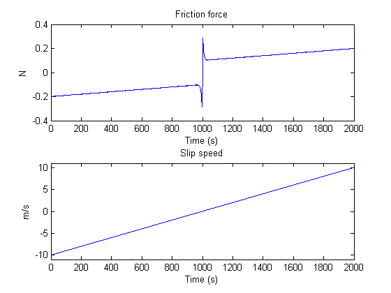
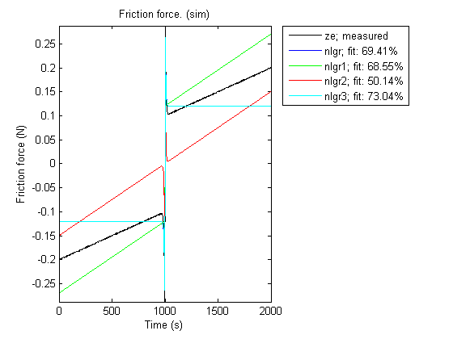
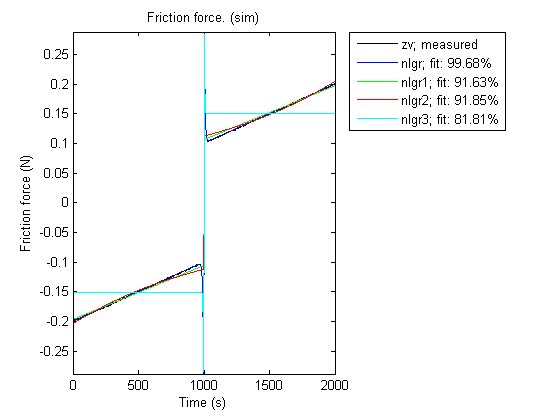
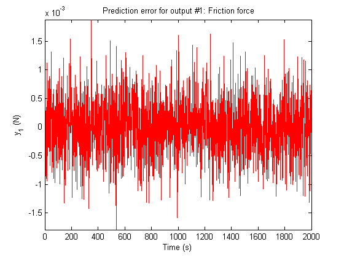
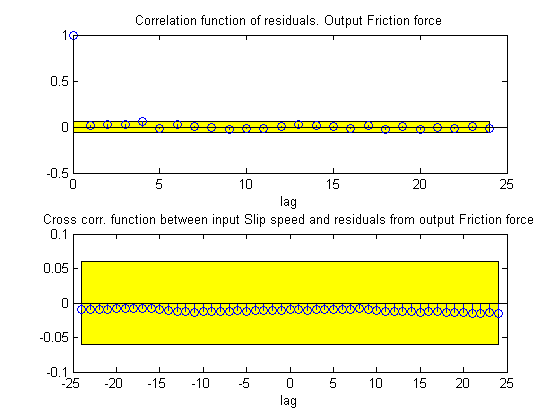

Friction Modeling: MATLAB File Modeling of Static SISO System
System identification normally deals with identifying parameters of dynamic models. However, static models are also of interest, sometimes by their own and sometimes as sub-models of larger more involved models. An example of the latter is discussed in the case study "An Industrial Robot Arm" (idnlgreydemo13.m), where a static friction model is employed as a fixed (pre-estimated) component of a robot arm model.
In this demo we also resort to static friction modeling and illustrate how this can be carried out using IDNLGREY.
Contents
A Continuously Differentiable Friction Model
Discontinuous and piecewise continuous friction models are often problematic for high-performance continuous controllers. This very fact motivated Makkar, Dixon, Sawyer and Hu to suggest a new continuously and differentiable friction model that captures the most common friction phenomena encountered in practice. The new friction model structure was reported in
C. Makkar, W. E. Dixon, W. G. Sawyer, and G.Hu "A New Continuously Differentiable Friction Model for Control Systems Design", IEEE(R)/ASME International Conference on Advanced Intelligent Mechatronics, Monterey, CA, 2005, pages 600-605.
and will serve as a basis for our static identification experiments.
The friction model proposed by Makkar, et al, links the slip speed v(t) of a body in contact with another body to the friction force f(t) via the static relationship
f(t) = g(1)*(tanh(g(2)*v(t) - tanh(g(3)*v(t))
+ g(4)*tanh(g(5)*v(t)) + g(6)*v(t)where g(1), ..., g(6) are 6 unknown positive parameters. This model structure displays a number of nice properties arising in real-world applications:
1. The friction model is symmetric around the origin.
2. The static friction coefficient is approximated by g(1)+g(4).
3. The first term of the equation, tanh(g(2)*v(t) - tanh(g(3)*v(t),
captures the so called Striebeck effect, where the friction term
shows a rather sudden drop with increasing slip speed near the
origin.
4. The Coulombic friction effect is modeled by the term
g(4)*tanh(g(5)*v(t)).
5. The viscous friction dissipation is reflected by the last term,
g(6)*v(t).Consult the above mentioned paper for many more details about friction in general and the proposed model structure in particular.
IDNLGREY Friction Modeling
Let us now create an IDNLGREY model object describing static friction. As usual, the starting point is to write an IDNLGREY modeling file, and here we construct an MATLAB file, friction_m.m, with contents as follows.
function [dx, f] = friction_m(t, x, v, g, varargin) %FRICTION_M Nonlinear friction model with Stribeck, Coulomb and viscous % dissipation effects.
% Output equation.
f = g(1)*(tanh(g(2)*v(1))-tanh(g(3)*v(1))) ... % Stribeck effect.
+ g(4)*tanh(g(5)*v(1)) ... % Coulomb effect.
+ g(6)*v(1); % Viscous dissipation term.% Static system; no states. dx = [];
Notice that a state update dx always must be returned by the model file and that it should be empty ([]) in static modeling cases.
Our next step is to pass the model file, information about model order, guessed parameter vector and so forth as input arguments to the IDNLGREY constructor. We also specify names and units of the input and output and state that all model parameters must be positive.
FileName = 'friction_m'; % File describing the model structure. Order = [1 1 0]; % Model orders [ny nu nx]. Parameters = {[0.20; 90; 11; ... 0.12; 110; 0.015]}; % Initial parameters. InitialStates = []; % Initial initial states. Ts = 0; % Time-continuous system. nlgr = idnlgrey(FileName, Order, Parameters, InitialStates, Ts, ... 'Name', 'Static friction model', ... 'InputName', 'Slip speed', 'InputUnit', 'm/s', ... 'OutputName', 'Friction force', 'OutputUnit', 'N', ... 'TimeUnit', 's'); setpar(nlgr, 'Minimum', {zeros(5, 1)}); % All parameters must be >= 0.
After these actions we have an initial friction model with properties as follows.
present(nlgr);
Time-continuous nonlinear static model defined by 'friction_m' (MATLAB file):
y(t) = H(t, u(t), p1) + e(t)
with 1 input, 0 states, 1 output, and 6 free parameters (out of 6).
Input:
u(1) Slip speed(t) [m/s]
Output:
y(1) Friction force(t) [N]
Parameters: value
p1(1) p1 0.2 (est) in [0, Inf]
p1(2) 90 (est) in [0, Inf]
p1(3) 11 (est) in [0, Inf]
p1(4) 0.12 (est) in [0, Inf]
p1(5) 110 (est) in [0, Inf]
p1(6) 0.015 (est) in [0, Inf]
Created: 29-Jun-2010 23:41:29
Last modified: 29-Jun-2010 23:41:29
In our identification experiments we are not only interested in the full friction model, but also in examining how a reduced friction model would perform. By reduced we here mean a friction model that contains two of the three terms of the full model. To investigate this, three copies of the full model structure are created and in each copy we fix the parameter vector so that only two of the terms will contribute:
nlgr1 = nlgr; nlgr1.Name = 'Static friction model without Striebeck term'; setpar(nlgr1, 'Value', {[zeros(3, 1); Parameters{1}(4:6)]}); setpar(nlgr1, 'Fixed', {[true(3, 1); false(3, 1)]}); nlgr2 = nlgr; nlgr2.Name = 'Static friction model without Coulombic term'; setpar(nlgr2, 'Value', {[Parameters{1}(1:3); 0; 0; Parameters{1}(6)]}); setpar(nlgr2, 'Fixed', {[false(3, 1); true(2, 1); false]}); nlgr3 = nlgr; nlgr3.Name = 'Static friction model without dissipation term'; setpar(nlgr3, 'Value', {[Parameters{1}(1:5); 0]}); setpar(nlgr3, 'Fixed', {[false(5, 1); true]});
Input-Output Data
At our disposal are 2 different (simulated) data sets where the input slip speed was swept from -10 m/s to 10 m/s in a ramp-type manner. We load the data and create two IDDATA objects for our identification experiments, ze for estimation and zv for validation purposes.
load(fullfile(matlabroot, 'toolbox', 'ident', 'iddemos', 'data', 'frictiondata')); ze = iddata(f1, v, 1, 'Name', 'Static friction system'); set(ze, 'InputName', 'Slip speed', 'InputUnit', 'm/s', ... 'OutputName', 'Friction force', 'OutputUnit', 'N', ... 'Tstart', 0, 'TimeUnit', 's'); zv = iddata(f2, v, 1, 'Name', 'Static friction system'); set(zv, 'InputName', 'Slip speed', 'InputUnit', 'm/s', ... 'OutputName', 'Friction force', 'OutputUnit', 'N', ... 'Tstart', 0, 'TimeUnit', 's');
The input-output data that will be used for estimation are shown in a plot window.
figure('Name', ze.Name);
plot(ze);
 Figure 1: Input-output data from a system exhibiting friction.
Performance of the Initial Friction Models
With access to input-output data and four different initial friction models the obvious question now is how good these models are? Let us investigate this for the estimation data set through simulations carried out by COMPARE:
figure; compare(ze, nlgr, nlgr1, nlgr2, nlgr3);
Figure 2: Comparison between true output and the simulated outputs of the four initial friction models.
Parameter Estimation
None of the initial models are able to properly describe the true output. To overcome this we estimate the model parameters of all four model structures. We configure all estimations to perform at most 30 iterations and to stop the iterations only in case the tolerance is 0 (which it in practice never will be for real-world data). These computations will take some time.
nlgr = pem(nlgr, ze, 'Display', 'On', 'MaxIter', 30, 'Tol', 0); nlgr1 = pem(nlgr1, ze, 'MaxIter', 30, 'Tol', 0, 'cov', 'none'); nlgr2 = pem(nlgr2, ze, 'MaxIter', 30, 'Tol', 0, 'cov', 'none'); nlgr3 = pem(nlgr3, ze, 'MaxIter', 30, 'Tol', 0, 'cov', 'none');
Criterion: Trace minimization
Scheme: Trust-Region Reflective Newton (LSQNONLIN, LargeScale = 'On')
--------------------------------------------------------------
Norm of First-order
Iteration Cost step optimality
--------------------------------------------------------------
0 0.00222895 - -
1 0.00011188 10 2.01
2 1.47228e-006 20 0.175
3 2.41891e-007 4.06 0.00129
4 2.41405e-007 4.49 0.000365
5 2.4139e-007 0.795 1.22e-005
6 2.4139e-007 0.0161 5.03e-009
7 2.4139e-007 0.000104 7.28e-013
8 2.4139e-007 2.74e-006 7.28e-013
9 2.4139e-007 6.85e-007 7.28e-013
10 2.4139e-007 1.71e-007 7.28e-013
11 2.4139e-007 4.28e-008 7.28e-013
12 2.4139e-007 1.07e-008 7.28e-013
13 2.4139e-007 2.68e-009 7.28e-013
14 2.4139e-007 6.69e-010 7.28e-013
15 2.4139e-007 1.67e-010 7.28e-013
16 2.4139e-007 4.18e-011 7.28e-013
17 2.4139e-007 1.05e-011 7.28e-013
18 2.4139e-007 2.61e-012 7.28e-013
19 2.4139e-007 6.54e-013 7.28e-013
20 2.4139e-007 1.63e-013 7.28e-013
21 2.4139e-007 4.08e-014 7.28e-013
22 2.4139e-007 1.01e-014 7.28e-013
23 2.4139e-007 2.52e-015 7.28e-013
24 2.4139e-007 6.29e-016 7.28e-013
25 2.4139e-007 1.57e-016 7.28e-013
26 2.4139e-007 3.93e-017 7.28e-013
--------------------------------------------------------------
Performance of the Estimated Friction Models
The performance of the models are once again investigated by comparing the true output with the simulated outputs of the four models as obtained using COMPARE, but this time the comparison is based on the validation data set zv.
figure; compare(zv, nlgr, nlgr1, nlgr2, nlgr3);
Figure 3: Comparison between true output and the simulated outputs of the four estimated friction models.
For this system we clearly see that the full model outperforms the reduced ones. Nevertheless, the reduced models seem to be able to capture the effects they model rather well, and in each case estimation results in a much better fit. The worst fit is obtained for the model where the viscous dissipation term has been left out. The impressive fit of the full model comes as no big surprise as its model structure coincide with that used to generate the true output data. The parameters of the full model are also close to the ones that were used to generate the true model output:
disp(' True Estimated parameter vector'); ptrue = [0.25; 100; 10; 0.1; 100; 0.01]; fprintf(' %7.3f %7.3f\n', [ptrue'; getpvec(nlgr)']);
True Estimated parameter vector
0.250 0.249
100.000 106.637
10.000 9.978
0.100 0.100
100.000 87.699
0.010 0.010
The Final Prediction Error (FPE) criterion (low values are good) applied to all four friction models confirms the superiority of the full friction model:
fpe(nlgr, nlgr1, nlgr2, nlgr3);
1.0e-003 *
0.0002 0.1665 0.1584 0.7931
As for dynamic systems, we can also examine the prediction errors of a static model using PE. We do this for the full friction model and conclude that the residuals seem to have a random nature:
figure; pe(zv, nlgr);
Figure 4: Prediction errors obtained with the estimated full friction model.
We further verify the randomness by looking at the residuals ("leftovers") of the full friction model:
figure('Name', [nlgr.Name ': residuals of estimated IDNLGREY model']); resid(zv, nlgr);
Figure 5: Residuals obtained with the estimated full friction model.
The step response of static models can also be computed and plotted. Let us apply a unit step and do this for all four estimated friction models:
figure('Name', [nlgr.Name ': step responses of estimated models']); step(nlgr, nlgr1, nlgr2, nlgr3); legend(nlgr.Name, nlgr1.Name, nlgr2.Name, nlgr3.Name, 'location', 'SouthEast');

Figure 6: Unit step responses of the four estimated friction models.
We finally display a number of properties, like the estimated standard deviations of the parameters, the loss function, etc., of the full friction model.
present(nlgr);
Time-continuous nonlinear static model defined by 'friction_m' (MATLAB file):
y(t) = H(t, u(t), p1) + e(t)
with 1 input, 0 states, 1 output, and 6 free parameters (out of 6).
Input:
u(1) Slip speed(t) [m/s]
Output:
y(1) Friction force(t) [N]
Parameters: value standard dev
p1(1) p1 0.249402 1.22168 (est) in [0, Inf]
p1(2) 106.637 6270.37 (est) in [0, Inf]
p1(3) 9.97835 41.6429 (est) in [0, Inf]
p1(4) 0.0999916 0.0470665 (est) in [0, Inf]
p1(5) 87.6992 12441.6 (est) in [0, Inf]
p1(6) 0.0100019 0.0080472 (est) in [0, Inf]
The model was estimated from the data set 'Static friction system', which
contains 2001 data samples.
Loss function 2.4139e-007 and Akaike's FPE 2.42838e-007
Created: 29-Jun-2010 23:41:29
Last modified: 29-Jun-2010 23:41:47
Conclusions
This demo has exemplified how to perform IDNLGREY modeling of a static system. The procedure for doing this is basically the same as for dynamic systems' modeling.
Additional Information
For more information on identification of dynamic systems with System Identification Toolbox™ visit the System Identification Toolbox product information page.